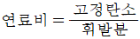
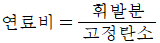
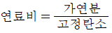
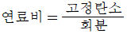
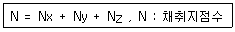

대기환경기사 (2005-03-06 기출문제)
1과목: 대기오염 개론
1. 높이 60m인 굴뚝에서 가스의 평균온도가 250℃, 대기의 온도는 25℃일때 이 굴뚝의 통풍력은? (단, 표준상태의 가스와 공기의 비중량은 1.3kg/Nm3이라보고 굴뚝 안에서의 마찰손실은 무시함.)
- 30.8mmH2O
- 20.5mmH2O
- 15.8mmH2O
- 12.4mmH2O
(정답률: 알수없음)
2. 수용모델에 관한 설명으로 틀린 것은?
- 측정자료를 입력자료로 사용하므로 시나리오 작성이 용이하다.
- 입자상, 가스상 물질, 가시도 문제등 환경전반에 응용 할 수 있다.
- 지형, 기상정보가 없는 경우도 사용이 가능하다.
- 수용체 입장에서 영향평가가 현실적으로 이루어질 수 있다.
(정답률: 알수없음)

3. 대기중의 이산화질소를 분석한 결과 20℃, 1기압에서 3㎍/m3 농도였다. 약 몇 ppm 인가?
- 0.0843
- 0.000974
- 0.001045
- 0.001568
(정답률: 알수없음)
4. '벤젠'에 관한 설명으로 틀린 것은?
- 체내에서 마뇨산으로 대사하여 소변으로 배설된다.
- 만성장해로서 조혈장해를 유발시킨다.
- 체내 흡수는 대부분 호흡기를 통하여 이루어진다.
- 체내에 흡수된 벤젠은 지방이 풍부한 피하조직과 골수에서 고농도로 축적되어 오래 잔존할 수 있다.
(정답률: 알수없음)
5. 세류현상(down wash)가 발생하지 않는 조건으로 가장 적절한 것은?
- 풍속이 배연속도의 1.5배이상 일 때
- 풍속이 배연속도의 2.0배이상 일 때
- 배연속도가 풍속의 1.5배이상 일 때
- 배연속도가 풍속의 2.0배이상 일 때
(정답률: 알수없음)
6. 대류권내에서는 일반적으로 고도가 높아짐에 따라 기온이 감소하나 반대로 증가하기도 한다. 이를 역전(Inversion)이라 하며 대기오염물의 혼합과 밀접한 관계를 갖는다. 이중 따뜻한 공기가 찬지면 위를 지나갈 때 대기 하부가 접촉냉각에 의해 역전층이 발생되는데 이를 어떤 역전이라 하는가?
- 복사역전
- 이류역전
- 침강역전
- 공중역전
(정답률: 40%)
7. 실내공기오염물질중 "라돈"에 관한 설명으로 틀린 것은?
- 화학적으로 거의 반응을 일으키지 않는다.
- 일반적으로 인체에 폐암을 유발시키는 것으로 알려져 있다.
- 무색, 무취의 기체이며 액화시 푸른색을 띤다.
- 라듐의 핵분열시 생성되는 물질이며 반감기는 3.8일간이다.
(정답률: 50%)
8. NOX 중 이산화질소에 관한 설명으로 틀린 것은?
- 적갈색의 자극성을 가진 기체이며 NO보다 6배의 독성이 강하다.
- 연소과정에서 직접배출되기도 하나 그 양은 NOX 중 약 5% 이하이다.
- 수용성이나 NO보다는 용해도가 낮으며 일명 '웃음기체' 라고도 한다.
- 약 1ppm 이상 존재할 경우 육안으로 감지할 수 있다.
(정답률: 알수없음)
9. 광화학물질인 PAN에 관한 설명중 옳지 않는 것은?
- PAN의 분자식은 C6H5COOONO2이다.
- 하루중 PAN의 농도는 한 낮에 최고로 된다.
- 식물의 영향은 잎의 밑부분이 은동색 또는 청동색이 되고 생활력이 왕성한 초엽에 피해가 크다.
- 눈에 통증을 일으키며 빛을 분산시키므로 가시거리를 단축시킨다.
(정답률: 알수없음)
10. 체적이 120m3인 지하 복사실의 공간에서 오존의 배출량이 0.2mg/min인 복사기를 연속으로 작동하고 있다. 복사기를 사용하기 전의 실내 오존의 농도가 0.⑤ppm이라고 할 때 5시간 사용 후 복사실의 오존농도는 몇 ppb인가? (단, 환기없음, 표준상태 기준)
- 283
- 332
- 433
- 522
(정답률: 알수없음)
11. 굴뚝연기의 분산형태중 환상형(looping)를 옳게 설명한 것은?
- 바람이 약하고 대기가 안정할 때 생긴다.
- 복사역전이 발달하는 초저녁부터 이른 아침사이에 많이 발생한다.
- 상층에는 침강역전, 하층에는 복사역전이 형성되었을때 발생한다.
- 굴뚝 가까운 지면에서 국지적이고 일시적인 고농도현상을 나타내기도 한다.
(정답률: 알수없음)
12. 대기가 매우 안정할 때 지상 20m에서 풍속이 8m/s 이라면 80m의 연돌 높이에서는 풍속은? (단, Deacon 식 적용, p=0.5 )
- 10m/sec
- 12m/sec
- 14m/sec
- 16m/sec
(정답률: 알수없음)
13. 먼지 농도가 40㎍/m3일 때 가시거리는? (단, 상대습도 70%, A=1.2)
- 25㎞
- 30㎞
- 35㎞
- 40㎞
(정답률: 알수없음)
14. 식물에 대한 암모니아의 영향으로 알맞지 않는 것은?
- 성숙한 잎에서 가장 민감하다.
- 갈색 또는 초록색으로 삶아진 형태를 나타낸다.
- 잎에 부분적으로 영향이 나타나는 것이 특징이다.
- 암모니아의 독성은 HCl과 비슷한 정도이다.
(정답률: 알수없음)
15. 리챠드슨(Richardson)수에 관한 설명으로 틀린 것은?
- 지구경계층에서의 기류에 안정도를 나타내는 척도로 이용한다.
- 무차원수로서 근본적으로 열적난류를 기계적인 난류로 전환시키는 율을 측정한 것이다.
- 큰 음의 값을 가지면 대류가 지배적이어서 바람이 약하게 된다.
- 0에 접근하면 분산이 무한대가 되어 결국 열전난류만 존재한다.
(정답률: 알수없음)
16. 오존에 관한 설명으로 알맞지 않은 것은?
- 청정지역의 대류권 오존농도는 일변화를 하지 않는다.
- 대류권의 오존은 국지적인 광화학스모그로 생성된 옥시단트의 지표물질이다.
- 대기중 오존은 온실가스로 작용한다
- 대기 중에서 오존의 배경농도는 0.1-0.2ppm 범위이다.
(정답률: 31%)
17. 다음 제조공정에서 발생하는 오염물질과 가장 거리가 먼 것은?
- 석유정제 - HCl
- 화학비료 - NH3
- 제철공업 - HCN
- 가스공업 - H2S
(정답률: 60%)
18. 0.2V/V%의 SO2를 포함하고 발생량이 500Sm3/min인 배연의 30%(무게기준)가 년간 같은 방향으로 흘러가 그 지역의 식물에 피해를 주었다. 5년 후에 그 지역에 살아남은 수목이 전체의 1/10 이였을 때 5년간 이 지역에 피해를 준 SO2량은?
- 약 2,250톤
- 약 4,510톤
- 약 5,430톤
- 약 5,540톤
(정답률: 알수없음)
19. 햇빛이 지표면에 도달하기전에 자외선의 대부분을 흡수함으로써 생물의 성장에 중요한 역할을 가져 오게 하는 대기권의 명칭은?
- 대류권
- 성층권
- 중간권
- 열권
(정답률: 알수없음)
20. 다음은 세계적인 대기오염 재해 사건에 대한 설명이다. 바르지 못한 것은?
- 뮤즈계곡 사건은 공장지대로서 아황산가스, 황산, 미세입자 등이 원인물질이며 무풍, 기온역전 연무발생 등에 의하여 피해가 발생하였다.
- 보팔 사건은 공장조업사고로 황화수소가 다량누출 되어 발생하였으며 기온역전, 지형상분지 등의 조건으로 많은 인명피해를 유발하였다.
- 런던사건은 석탄연소에 의하여 발생한 대기오염 사건으로 아황산가스, 먼지 등이 복사성기온역전, 무풍상태, 높은 습도에서 발생한 스모그 사건이다.
- 로스엔젤레스 사건은 자동차에서 발생되는 질소산화물 탄화수소 등에 의하여 침강성기온역전, 무풍상태에서 발생한 스모그 사건이다.
(정답률: 알수없음)
2과목: 연소공학
21. 자동차 내연기관에서 휘발유 (C8H18 :옥탄)을 연소시킬 때 공기연료비(air/fuel ratio)는? (단, 완전연소, 무게기준)
- 60
- 40
- 30
- 15
(정답률: 알수없음)
22. 기체연료의 특징에 관한 설명으로 가장 거리가 먼 것은?
- 연료중에 황함유량이 적어 연소 배기가스 중에 SO2 발생량이 매우 적다.
- 부하의 변동범위가 넓고 연소의 조절이 용이하며 점화 및 소화가 간단하다.
- 저장 및 수송이 불편하다.
- 완전연소를 위해 많은 과잉공기가 소모된다.
(정답률: 알수없음)
23. 1Sm3당의 무게가 0.714㎏인 탄화수소는?
- CH4
- C2H6
- C3H6
- C3H8
(정답률: 알수없음)
24. 자동차에 적용되는 삼원촉매가 정화하는 가스와 가장 거리가 먼 것은?
- 일산화탄소
- 질소산화물
- 황산화물
- 탄화수소
(정답률: 75%)
25. 탄소 85%, 수소 15%로 되는 경유(1㎏)를 공기비 1.2 로 연소하는 경우 탄소의 2%가 검댕이가 된다고 하면 실제건연소가스 1Sm3중의 검댕이의 농도(g/Sm3)는?
- 약 1.3
- 약 1.1
- 약 0.8
- 약 0.6
(정답률: 알수없음)
26. 섭씨온도 10℃는 화씨온도(°F)로 얼마인가?
- 70
- 60
- 50
- 40
(정답률: 알수없음)
27. 노즐을 통하여 5 - 20㎏/㎝2 정도의 압력으로 가압된 연료를 연소실 내부로 분무시키는 액체연료의 연소장치 버어너로, 대용량 버어너로 제작이 용이하고 분무각도가 크며 유량 조절범위가 좁은 것이 특징인 것은?
- 고압기류 분무식 버어너
- 공기 유압식 버어너
- 유압 분무식 버어너
- 고압 노즐식 버어너
(정답률: 20%)
28. 수소 24%, 수분 1%인 중유의 고발열량이 10000[kcal/kg]이라면 저위발열량[kcal/kg]은?
- 8453
- 8698
- 8894
- 8995
(정답률: 알수없음)
29. 연료비의 정의로써 가장 알맞는 것은?




(정답률: 알수없음)
30. 가로, 세로, 높이가 각각 3m, 1m, 1.5m인 연소실에서 연소실 열발생율을 2.5 x 105kcal/m3ㆍhr가 되도록 하려면 1시간에 중유를 몇 kg 연소시켜야 하는가? (단, 중유의 저위발열량은 11,000kcal/kg이다.)
- 약 50
- 약 100
- 약 150
- 약 200
(정답률: 알수없음)
31. 연소열을 정성적 및 정량적으로 표현하기 위한 용어에 관한 설명으로 알맞지 않는 것은?
- 비열은 물 1g을 1℃ 상승시키는 데 필요한 열량으로 정의된다.
- 엔탈피는 어떤 계가 가지고 있는 열함량을 말한다.
- 잠열이란 물질에 의하여 흡수 또는 방출된 열이 상 또는 상태 변화에만 사용되고 온도상승의 효과를 나타내지 않는 열이다.
- 엔탈피변화란 정압에서의 반응열의 변화를 말한다.
(정답률: 알수없음)
32. 액화 천연가스(LNG)가 부피비로 99%의 메탄(CH4)과 미량성분으로 구성되어 있다면 LNG 3L를 완전연소할 때 필요한 이론적 공기량은?
- 약 28.3L
- 약 19.8L
- 약 13.5L
- 약 9.4L
(정답률: 알수없음)
33. 원유를 증류할 때 일정온도의 끓는점 범위에서 유출되는 탄화수소의 혼합체로 나프타(naphtha)가 있는데, 이 나프타와 끓는점의 범위나 성상이 가장 유사한 물질은?
- 가솔린
- 등유
- 경유
- 중유
(정답률: 알수없음)
34. 100초 동안 반응물의 1/2이 분해되었다면 반응물이 1/10 남을 때까지 걸리는 시간은? (단, 1차반응 기준)
- 332초
- 352초
- 372초
- 392초
(정답률: 알수없음)
35. CO 20%, CO2 20%, N2 60%로 된 고로 가스의 이론건조연소가스량(Nm3/Nm3)은? (단, 부피기준)
- 1.376
- 1.567
- 1.878
- 2.1⑤
(정답률: 알수없음)
36. 석탄 사용 가열로의 배기가스를 분석한 결과 CO2:15%, O2:5%, N2:80% 였다. 공기비는 대략 얼마인가? (단, 연료중 질소는 무시한다.)
- 1.31
- 1.74
- 1.92
- 2.12
(정답률: 알수없음)
37. 탄소 85%, 수소 13%, 황 2%인 중유 1.5Kg의 연소에 필요한 이론 공기량(Sm3 )은?
- 16.6
- 18.6
- 22.4
- 25.1
(정답률: 30%)
38. 석탄의 성상에 관한 설명으로 틀린 것은?
- 석탄 연소시 잔류물인 회분중 가장 많이 함유된 것은 SiO2 이다.
- 점결성은 석탄에서 코크스를 생산할 때 중요한 성질이다.
- 건조한 석탄의 착화온도는 탄화도가 높을수록 착화온도는 낮아진다.
- 석탄의 휘발분은 매연발생의 요인이 된다.
(정답률: 알수없음)
39. 연소가스 분석결과 CO2 30 %, O2 7 % 일 때 (CO2)max는? (단, 완전연소 기준)
- 35 %
- 40 %
- 45 %
- 50 %
(정답률: 알수없음)
40. 어떤 연소반응은 다음식으로 표현된다. A → B + C, 이 반응의 속도정수(k)는 5 x 10-1(min-1)이고, A의 초기농도는 10 mole/L 이라면 반응개시 후 2분이 경과하였을 때의 A의 농도는 몇 mole/L 인가? (단, 위 반응이 1차반응 (반응속도가 A농도에 1차로 비례함) )
- 3.7
- 6.3
- 7.2
- 9.3
(정답률: 알수없음)
3과목: 대기오염 방지기술
41. 황성분이 1%인 중유를 40톤/시간 으로 연소할 때 배출되는 가스를 CaCO3로 탈황하고 황을 석고(CaSO4 ㆍ2H2O)로 회수할 경우 부산물인 석고의 이론적 생성량(톤/시간)은? (단, 황분은 100% SO2로 전환됨, 탈황률은 90%이며 Ca:40이다. )
- 1.37
- 1.42
- 1.53
- 1.94
(정답률: 알수없음)
42. 휘발유 자동차에서 HC를 가장 많이 배출 하는 곳은?
- 크랭크실의 블로바이 가스
- 배기가스
- 기화기 증발
- 연료탱크
(정답률: 알수없음)
43. 전기집진기에서 정상비저항 운전이 가능하도록 하기위한 비저항조절장치에 관한 설명으로 틀린 것은?
- 저비저항의 경우 암모니아가스의 주입이 가능하도록 조절제 주입장치가 필요하다.
- 고비저항의 경우 전해질 물질(수증기, 물, SO2등)을 주입이 가능하도록 조절제 주입장치가 필요하다.
- 고비저항 입자의 경우 재비산 방지를 위한 부속장치(baffle)의 설계가 필요하다.
- 고비저항 입자의 경우 타격의 빈도를 강하게 하거나 빈도수를 늘려주는 장치의 설계가 필요하다.
(정답률: 알수없음)
44. 처리가스량이 150m3/min이고 압력손실이 25cmH2O인 집진장치를 효율 90%인 송풍기로 운전할 때 소요되는 동력은?
- 6.8kw
- 11.1kw
- 12.3kw
- 13.6kw
(정답률: 15%)
45. 공기나 다른 기체 중에 함유된 습기를 제거하는 것 외에도 산업공정에서 배출되는 악취나 오염물질들을 제거하는데 유효하며 공기나 다른 기체로부터 유용한 용매의 증기를 회수할 수 있는 유해가스 처리기술은?
- 연소법
- 흡수법
- 촉매산화법
- 흡착법
(정답률: 알수없음)
46. NO가스농도가 200ppm인 배기가스 100,000Sm3/hr를 CO로 선택적 접촉 환원법으로 처리하는 경우 완전히 처리하기 위한 CO의 시간당 필요양은?
- 5Sm3
- 10Sm3
- 15Sm3
- 20Sm3
(정답률: 알수없음)
47. 유입구 폭 15cm, 유효선회류수 6인 원심력집진기에 함진가스(함진가스의 유입가스 속도 25 m/s , 먼지입자의 밀도 2.0 g/cm3, 함진가스의 점도 2×10-5 kg/mㆍs )를 처리할 때 함진가스에 포함된 입자의 절단입경은(㎛)은? (단, 함진가스밀도는 1.2kg/m3 )
- 3.78
- 4.23
- 5.89
- 6.17
(정답률: 알수없음)
48. 입자의 침강속도에 관한 내용으로 틀린 것은?
- 항력계수는 실험에 의하여 얻어지는데 유체의 흐름을 결정하는 레이놀즈수에 의하여 값이 결정된다.
- 커닝햄보정계수는 입자크기가 작을수록 증가한다.
- 입경이 작은 입자에 대한 침강속도는 스토크영역에서의 침강속도식에 커닝햄보정계수를 곱한 식으로 구할 수 있다.
- 커닝행보정계수에 적용되는 평균자유거리(λ)는 온도 25℃, 1기압에 5㎛ 이상이다.
(정답률: 알수없음)
49. 처리가스 유량이 5,000 m3/hr인 가스를 충전탑을 이용하여 처리하고자 한다. 충전탑내 가스의 속도를 0.5 m/sec로 할경우 흡수탑의 직경은?
- 약 1.9m
- 약 2.3m
- 약 2.8m
- 약 3.5m
(정답률: 34%)
50. 배연탈황법의 습식법과 건식법에 대한 장ㆍ단점으로 가장 거리가 먼 것은? (단, 습식법과 건식법 비교 )
- 습식법은 배출가스가 굴뚝으로 배출될 때 확산이 나쁘다.
- 습식법의 경우, 반응 효율은 높으나 수질오염의 문제가 심하다.
- 건식법은 장치의 규모는 작으나 배출가스의 온도저하가 없어 대용량처리가 가능하다.
- 건식법에는 석회석주입법, 활성탄흡착법, 산화법 등이 있다.
(정답률: 알수없음)
51. 질소화합물인 메틸아민의 냄새(악취) 특징으로 가장 적절한 것은?
- 양파 썩는 냄새
- 자극적이며 새콤하고 타는 듯한 냄새
- 생선 썩는 냄새
- 자극적인 신냄새
(정답률: 알수없음)
52. 어떤 집진장치의 입구,출구에서 배기 중인 분진의 농도를 측정하였더니 각각 15g/Sm3, 0.3g/Sm3 이었고 입구,출구에서 채취한 분진시료중에 0-5㎛의 입경분포의 것의 중량 백분율은 각각 10%, 60% 이었다면 이 집진장치의 0-5㎛의 입경범위의 시료분진에 대한 부분집진율(%)은?
- 82
- 84
- 86
- 88
(정답률: 알수없음)
53. VOCs를 98% 이상 제어하기 위한 전형적인 VOCs 제어기술과 가장 거리가 먼 것은?
- 후연소
- 촉매산화
- 회복(recuperative)열산화
- 저온(cryogenic)응축
(정답률: 알수없음)
54. 문제 오류로 복원중입니다. 정확한 내용을 아시는 분께서는 오류신고를 통하여 내용 작성 부탁드립니다. 정답은 1번입니다.
- 66
- 76
- 86
- 96
(정답률: 알수없음)
55. 벤츄리스크러버(venturi scrubber)에 관한 내용으로 가장 거리가 먼 것은?
- 액기비는 보통 0.3∼1.5ℓ/m3 이다.
- 최적액적직경은 분진입경의 10∼15배 정도이다.
- 압력손실은 보통 300∼800 mmH2O 정도이다.
- 목부의 가스유속은 보통 60∼90m/s이다.
(정답률: 알수없음)
56. 유해물질처리를 위한 흡수장치중 분무탑(액분산형)에 관한 설명으로 알맞지 않는 것은?
- 분무에 소요되는 동력이 크다.
- 편류가 일어나기 쉽고 분무액과 가스를 균일하게 접촉시키는 것이 어렵다.
- 침전물이 발생되는 경우는 적용하기 어렵다.
- 압력손실이 2∼20mmH2O 정도로 비교적 작다.
(정답률: 알수없음)
57. 어떤 유해가스와 물이 일정온도에서 평형상태에 있다면 헨리상수는(atm m3/kmol)? (단, 기상의 유해가스 분압이 789㎜H2O일 때 수중유해가스의 농도가 3.5 k㏖/m3 이며, 전압은 1atm 이다)
- 약 0.01
- 약 0.02
- 약 0.03
- 약 0.04
(정답률: 알수없음)
58. 부피비로 염화수소 0.7%인 배출가스 5000Sm3/hr를 수산화칼슘으로 처리하여 염화수소를 완전히 제거하기 위한 수산화칼슘의 시간당 필요량은? (단, Ca:40 )
- 약58㎏
- 약42㎏
- 약39㎏
- 약35㎏
(정답률: 알수없음)
59. 사이클론의 종류에 대한 설명으로 틀린 것은?
- 접선유입식 사이클론: 집진효율의 변화가 비교적 적다.
- 접선유입식 사이클론: 일반적으로 유입 가스속도는 7-15m/s 정도이다.
- 축류식 사이클론: 반전형과 직선형으로 구분되며 반전형이 많이 사용되고 있다.
- 축류식 사이클론: 일반적으로 압력손실은 200mmH2O 전후로 비교적 높은 편이다.
(정답률: 알수없음)
60. 문제 오류로 복원중입니다. 정확한 내용을 아시는 분께서는 오류신고를 통하여 내용 작성 부탁드립니다. 정답은 3번입니다.
- 약 5600
- 약 6700
- 약 7800
- 약 8900
(정답률: 알수없음)
4과목: 대기오염 공정시험기준(방법)
61. 굴뚝배출가스 중 아황산가스를 연속적으로 자동측정하는 방법의 용어에 관한 내용으로 틀린 것은?
- 교정가스: 공인기관의 보정치가 제시되어 있는 표준가스로 연속자동측정기 최대 눈금치의 약 10%와 90%에 해당하는 농도를 갖는다.
- 제로가스: 공인기관에 의해 아황산가스 농도가 1ppm 미만으로 보증된 표준가스를 말한다.
- 검출한계: 제로드리프트의 2배에 해당하는 지시치가 갖는 아황산가스의 농도를 말한다.
- 점(point) 측정시스템: 굴뚝 또는 덕트 단면 직경의 10%이하의 경로 또는 단일점에서 오염물질 농도를 측정하는 배출가스 연속자동측정시스템이다.
(정답률: 알수없음)
62. 배출허용기준 중 표준산소농도를 적용받는 항목에 대한 배출가스량 보정식으로 적절한 것은? (단, Q:배출가스유량(Sm3/일), Qa:실측배출가스유량(Sm3/일), OS:표준산소농도(%), Oa:실측산소농도(%))
- Q = Qa ×[(OS - 21)/(Oa - 21)]
- Q = Qa ×[(Oa - 21)/(Os - 21)]
- Q = Qa ÷[(21 - OS)/(21 - Oa)]
- Q = Qa ÷[(21 - Oa)/(21 - Os)]
(정답률: 알수없음)
63. 시험의 기재 및 용어에 관한 설명 중 틀린 것은?
- '바탕시험을 하여 보정한다.'함은 시료에 대한 처리 및 측정시, 시료를 사용하지 않고 같은 방법으로 조작한 측정치를 뜻한다.
- 용액의 액성표시는 따로 규정이 없는 한 유리전극법에 의한 pH미터로 측정한 것을 뜻한다.
- 시험조작 중 "즉시"란 30초이내에 표시된 조작을 하는 것이다.
- 액체성분의 양을 '정확히 취한다.'함은 홀피펫,메스 플라스크 또는 이와 동등 이상의 정도를 갖는 용량계를 사용하여 조작하는 것을 뜻한다.
(정답률: 알수없음)
64. 굴뚝 단면이 원형일 경우 먼지측정을 위한 측정점수에 대한 설명이다. 이중 맞지 않는 것은?
- 측정점수는 굴뚝직경이 4.5m를 초과 할 때는 20점까지로 한다.
- 굴뚝 단면적이 1 m2이하로 소규모일 경우에는 그 굴뚝 단면의 중심을 대표점으로 하여 1점만 측정한다.
- 굴뚝 직경이 2.5m인 경우에 측정점수는 12 이다.
- 굴뚝 직경이 1.5m인 경우에 반경구분수는 2 이다.
(정답률: 알수없음)
65. 굴뚝에서 배출되는 질소산화물분석방법인 아연환산 나프틸 에틸렌디아민법 분석에 관한 설명으로 틀린 것은?
- 시료중 질소산화물을 오존 존재하에서 물에 흡수시켜 질산이온으로 만든다.
- 질산이온을 분말금속아연을 사용하여 아질산이온으로 환원시킨다.
- 시료중 질소산화물 농도가 10 - 1000V/Vppm의 것을 분석하는데 적당하다.
- 1000V/Vppm이상의 아황산가스, 염소이온, 암모늄이온의 공존에 방해를 받는다.
(정답률: 알수없음)
66. 환경기준시험법의 가스상 물질의 시료채취에서 채취관-여과재-포집부-흡인펌프-유량계(가스미터)의 순으로 시료를 채취하는 방법은?
- 용기포집법
- 용매포집법
- 직접포집법
- 포집여지에 의한 방법
(정답률: 알수없음)
67. 다음 방법 중 굴뚝 배출가스 중의 질소산화물을 정량하는 방법은?
- 아르세나조 Ⅲ법
- 차아염소산염법
- 아세틸아세톤법
- 페놀디슬폰산법
(정답률: 67%)
68. 다음은 환경대기중의 석면을 측정, 분석하는 방법을 설명한 것이다. 알맞지 않은 것은?
- 멤브레인 필터에 포집한 대기부유먼지중 석면섬유를 위상차 현미경을 사용 계수한다.
- 석면 먼지 농도표시는 표준상태의 기체 1㎖중에 함유된 석면섬유개수(개/㎖)로 표시한다.
- 멤브레인 필터는 얇은 다공성 막으로 구멍지름 평균 0.01-10㎛이다.
- 필터의 광굴절율은 약 0.15이하이며 아세톤 용액에 담그면 식별이 분명해 진다.
(정답률: 알수없음)
69. 굴뚝 등에서 배출되는 배출가스 중의 황산화물 분석법중 아르세나조 Ⅲ법에서 종말점의 색깔은?
- 청색
- 적색
- 녹색
- 자주색
(정답률: 알수없음)
70. 다이옥신류의 농도계산은 환산농도에 환산계수를 곱하여 배출가스중의 독성등가 환산농도의 계산방법을 사용한다. 다음중 독성등가 환산계수가 가장 큰 것은?
- 2, 3, 7, 8 - T4 CDD
- 1, 2, 3, 7, 8 - P5 CDD
- 2, 3, 7, 8 - T4 CDF
- 1, 2, 3, 7, 8 - P5 CDF
(정답률: 알수없음)
71. 흡광차분광법(DOAS)으로 측정시 필요한 광원으로 알맞는 것은?
- 1800 - 2850nm 파장을 갖는 중공음극램프
- 280 - 900nm 파장을 갖는 텅스텐램프
- 180 - 2850nm 파장을 갖는 제논램프
- 200 - 900nm 파장을 갖는 음이온램프
(정답률: 알수없음)
72. 굴뚝에서 배출되는 가스중 벤젠을 분석하고자 할 때 채취관이나 도관의 재질로 알맞지 않는 것은?
- 경질유리
- 석영
- 불소수지
- 보통강철
(정답률: 알수없음)
73. 비분산 적외선 분석법에 대한 설명으로 틀린 것은?
- 비교가스는 시료셀에서 적외선 흡수를 측정하는 경우 대조가스로 사용하는 것으로 적외선을 흡수하지 않는 가스를 말한다.
- 비교셀은 시료셀과 동일한 모양을 가지며 일정농도의 시료성분의 기체를 봉입하여 시료가스와 비교하는데 사용한다.
- 광원은 원칙적으로 니크롬선 또는 탄화규소의 저항체에 전류를 흘려 가열한 것을 사용한다.
- 시료셀은 시료가스가 흐르는 상태에서 양단의 창을 통해 시료광속이 통과하는 구조를 갖는다.
(정답률: 알수없음)
74. 흡광차 분광법의 분석기 내부의 구성과 가장 거리가 먼 것은?
- 분광기
- 써프렛서
- 검지부
- 샘플채취부
(정답률: 알수없음)
75. 배출가스중의 산소농도를 자동측정기 방식으로 측정할 때 '항온조 온도조절 동작 점검', 브릿지전류의 점검'을 주된 보수점검사항으로 하여야 하는 측정방식은?
- 자기풍 방식
- 자기식 방식
- 질코니아 방식
- 전극 방식
(정답률: 알수없음)
76. 비색법에 의해서 어떤 물질을 정량할 때 10mm의 셀(cell)을 사용하였을 경우 시료의 흡광도가 0.5 라 하면, 같은 시료를 20mm 셀로 사용해서 측정했다면 흡광도는?
- 0.25
- 0.5
- 1.0
- 2.0
(정답률: 알수없음)
77. 화학분석의 일반사항중 농도표시에 관한 설명으로 알맞지 않는 것은?
- 중량백분율로 표시할 때는 %의 기호를 사용한다.
- 1억분율은 pphm, 100억분율은 ppb로 표시한다.
- 기체 100mL중의 성분질량(g)을 표시할 때에는 W/V%의 기호를 사용한다.
- ppm의 경우 따로 표시가 없는 한 기체일 때는 용량 대용량(V/V)으로 표시한다.
(정답률: 알수없음)
78. 환경대기중의 오염물질에 관한 시험 및 분석에 있어서 시료채취 지점수를 결정하기 위해 다음 공식을 이용하고자 한다. 이에 대해 잘못 해석한 것은?

- 대상지역의 오염도를 고려한 공식이다.
- Nx=(0.065)⒡
 ×(환경기준보다 농도가 높은 지역면적)
×(환경기준보다 농도가 높은 지역면적) - Ny=(0.0096)⒡
 ×(환경기준보다 농도가 낮으나 자연농도보다 높은 지역면적)
×(환경기준보다 농도가 낮으나 자연농도보다 높은 지역면적) - Nz=(0.0004)×(자연상태의 농도와 같은 지역면적)
(정답률: 알수없음)
79. 기체 중의 농도를 mg/m3 로 표시했을 때 m3 가 의미하는 것으로 옳은 것은?
- 실측상태의 온도, 압력하에서의 1m3 기체용적
- 표준상태의 온도, 압력하에서의 1m3 기체용적
- 상온상태의 온도, 압력하에서의 1m3 기체용적
- 절대온도,절대압력하에서의 1m3 기체용적
(정답률: 알수없음)
80. 소각시설에서 배출가스중의 A물질농도가 2.0mg/Sm3 이었다. 배출가스중의 산소농도가 15% 라면 A물질의 보정 농도(mg/Sm3)는? (단 A물질은 표준산소농도 적용항목으로 가정함 표준산소 농도는 12% 이다)
- 1
- 3
- 5
- 7
(정답률: 알수없음)
5과목: 대기환경관계법규
81. 2종 사업장 규모에 해당되는 사업장은?
- 대기오염물질발생량의 합계가 연간 50톤인 사업장
- 대기오염물질발생량의 합계가 연간 100톤인 사업장
- 대기오염물질발생량의 합계가 연간 200톤인 사업장
- 대기오염물질발생량의 합계가 연간 500톤인 사업장
(정답률: 알수없음)
82. 기후, 생태계변화 유발물질과 가장 거리가 먼 것은?
- 과불화탄소
- 염화불화수소
- 육불화황
- 아산화질소
(정답률: 25%)
83. 운행차정밀검사지정사업자가 아닌 자가 운행차정밀검사지정사업자로 지정을 받은 것처럼 하여 정밀검사업무를 한자에 대한 벌칙기준으로 적절한 것은?
- 1년이하의 징역 또는 500만원이하의 벌금에 처한다.
- 2년이하의 징역 또는 1000만원이하의 벌금에 처한다.
- 3년이하의 징역 또는 2000만원이하의 벌금에 처한다.
- 5년이하의 징역 또는 3000만원이하의 벌금에 처한다.
(정답률: 9%)
84. 특정대기 유해물질이 아닌 것은?
- 이황화메틸
- 아닐린
- 스틸렌
- 아세트알데히드
(정답률: 알수없음)
85. 대기오염배출시설의 설치 신고서에 첨부되어야 하는 서류로 알맞지 않는 것은?
- 오염물질배출량 예측 내역서
- 배출시설 및 방지시설의 설치내역서
- 방지시설의 일반도
- 방지시설의 연간 유지관리계획서
(정답률: 알수없음)
86. 환경관리인 신규교육기준에 관한 내용으로 알맞는 것은?
- 환경관리인으로 임명된 날부터 5일 이내 1회
- 환경관리인으로 임명된 날부터 15일 이내 1회
- 환경관리인으로 임명된 날부터 1년 이내에 1회
- 환경관리인으로 임명된 날부터 3년 이내에 1회
(정답률: 알수없음)
87. 대기 오염도 검사기관과 가장 거리가 먼 것은?
- 유역환경청
- 특별시, 광역시, 도의 보건환경연구원
- 환경관리공단
- 국립환경기술원
(정답률: 알수없음)
88. 과징금의 용도와 가장 거리가 먼 것은?
- 자동차 배출가스 정도검사 관리 및 지원사업
- 자동차 배출가스의 검사안내, 무료측정 등 홍보사업
- 자동차 배출가스의 측정장비 및 시설의 구입, 설치 운영비용
- 자동차 배출가스의 감축을 위한 시험사업 및 연구 용역사업
(정답률: 0%)
89. 문제 오류로 복원중입니다. 정확한 내용을 아시는 분께서는 오류신고를 통하여 내용 작성 부탁드립니다. 정답은 2번입니다.
- 일일조업시간은 측정하기 전 최근 조업한 15일간의 배출시설의 조업시간 평균치로서 시간으로 표시한다.
- 일일조업시간은 측정하기 전 최근 조업한 30일간의 배출시설의 조업시간 평균치로서 시간으로 표시한다.
- 일일조업시간은 측정하기 전 최근 조업한 60일간의 배출시설의 조업시간 평균치로서 시간으로 표시한다.
- 일일조업시간은 측정하기 전 최근 조업한 90일간의 배출시설의 조업시간 평균치로서 시간으로 표시한다.
(정답률: 40%)
90. 자동차의 배기가스로 인한 대기오염을 줄이기 위하여 시. 도 조례가 정하는바에 따라 터미널, 차고지, 주차장 등의 장소에서 자동차의 원동기를 가동한 상태로 주차 또는 정차행위를 한 운전자에 대한 행정조치사항으로 맞는 것은?
- 30만원 이하의 과태료
- 50만원 이하의 과태료
- 100만원 이하의 과태료
- 200만원 이하의 과태료
(정답률: 알수없음)
91. 먼지, 황산화물 및 질소산화물의 연간 발생량 합계가 25톤인 시설의 자가측정횟수기준은?
- 주 1회 이상
- 월 2회 이상
- 매 2월 1회 이상
- 매분기 1회 이상
(정답률: 알수없음)
92. 배출시설에서 배출되는 입자상물질인 아연화합물(Zn)의 배출허용농도기준으로 알맞는 것은? (단, 모든 배출시설)
- 5mg/Sm3 이하
- 10mg/Sm3 이하
- 15mg/Sm3 이하
- 20mg/Sm3 이하
(정답률: 알수없음)
93. 대기환경보전법의 규정에 의한 초과부과금의 부과 대상 오염물질이 아닌 것은?
- 악취
- 시안화수소
- 일산화탄소
- 염소
(정답률: 알수없음)
94. 악취측정방법 중 기기분석법에 의한 측정악취항목이 아닌것은?
- 스티렌
- 트리메틸아민
- 아세트알데히드
- 아민류
(정답률: 알수없음)
95. 대기오염방지시설과 가장 거리가 먼 것은?
- 직접연소에 의한 시설
- 촉매반응을 이용하는 시설
- 오존산화에 의한 시설
- 토양흡수에 의한 시설
(정답률: 알수없음)
96. 오존(O3)의 환경기준으로 맞는 것은?
- 8시간 평균치 0.5ppm 이하
- 8시간 평균치 0.1ppm 이하
- 1시간 평균치 0.5ppm 이하
- 1시간 평균치 0.1ppm 이하
(정답률: 알수없음)
97. 대기측정망 설치계획을 고시할 때 포함될 사항과 거리가 먼 것은?
- 측정대상 및 기준
- 측정망 설치시기
- 측정망 배치도
- 측정소를 설치할 토지 또는 건축물의 위치 및 면적
(정답률: 알수없음)
98. 휘발유를 사용하는 자동차 배출가스의 종류로 알맞지 않는 것은?
- 알데히드
- 질소산화물
- 탄화수소
- 이산화탄소
(정답률: 알수없음)
99. 위임업무의 보고사항 중 보고횟수기준이 연 1회에 해당되지 않는 것은?
- 비산먼지발생대상사업 신고현황
- 굴뚝자동측정기의 정도검사 현황
- 악취배출시설 지도, 점검실적
- 휘발성유기화합물 배출시설설치신고현황
(정답률: 알수없음)
100. 대기오염물질 측정기기의 운영관리 기준중 굴뚝의 온도를 측정하기 위한 온도계는 국가표준 기본법에 의한 교정검사를 ( ① )받아야하며 그 기록은 ( ② )보관하여야 한다. ( )안에 들어 갈 내용은?
- ① 연 1회 이상 ② 2년 이상
- ① 연 1회 이상 ② 3년 이상
- ① 연 2회 이상 ② 2년 이상
- ① 연 2회 이상 ② 3년 이상
(정답률: 알수없음)